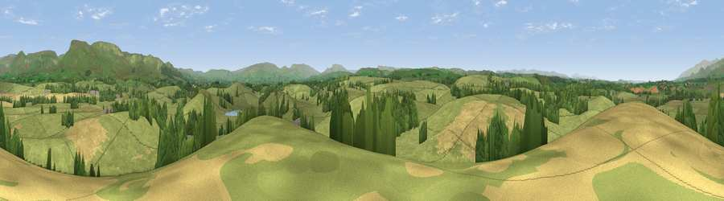

Trickle Banks
#11345 in England · top 39% of its area beats it · near SandfordWhere it is
The exact computed spot (NY 72075 15825). Click the marker for map links.
The view, rendered

A 360° render of this exact spot computed from the terrain model, tree cover and land cover — summer colours, afternoon light, calibrated against photographs of famous viewpoints. Real trees, hedges and buildings will differ in detail.
The panorama
Grey silhouette: terrain skyline in each direction (720 bearings, Earth curvature and refraction included). Dashed green: skyline with trees (+15 m) and buildings (+8 m) as obstacles. Blue strip: how far the ground is visible on each bearing.
Where the view opens
Wedge length = distance to the farthest visible ground on that bearing (vegetation-aware). Rings at 10, 25 and 50 km.
What fills the view
78% grassland · 12% cropland · 10% woodland
Angular shares of the visible panorama (visual magnitude), not map area. Landscape diversity 0.31 (0–1 Shannon).
Key numbers
More beautiful places nearby
The staircase of upgrades: each row has a higher view potential than everything closer. Driving times are estimates from straight-line distance, calibrated against real road routing — check an actual route before setting out.
| Place | Direction | Drive | Score |
|---|---|---|---|
| Viewpoint near Hilton | NE · 6 km | ~12 min | 75.2 |
| Viewpoint c10485_7606 | NE · 12 km | ~22 min | 75.6 |
| Mickle Fell | NE · 12 km | ~23 min | 75.8 |
| Randygill Top | SSW · 16 km | ~28 min | 76.0 |
| Great Dun Fell | N · 16 km | ~29 min | 77.8 |
| Little Dun Fell | N · 17 km | ~30 min | 78.4 |
| Cross Fell | N · 19 km | ~32 min | 78.7 |
| Fell Head | SSW · 19 km | ~33 min | 78.8 |
54.53692, -2.43309 · source: osm peak · position refined by local search. Computed location — check access rights before visiting.